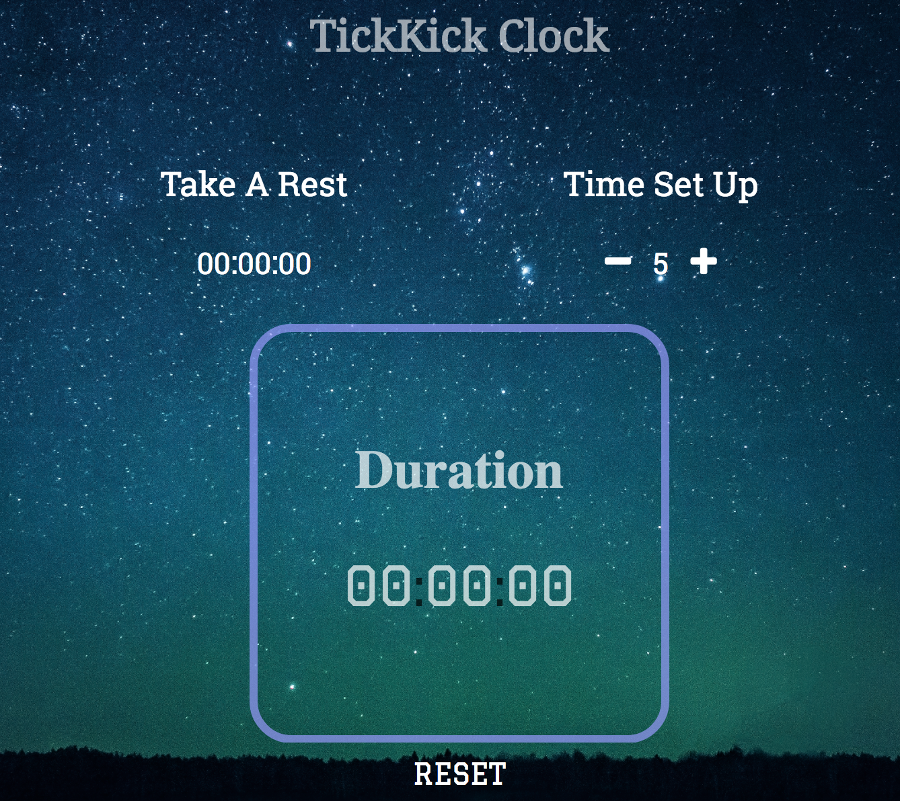

<!--
   
    <!DOCTYPE html>


    <html lang="en">


    <head>

    <!--  Meta  -->
   <!--
    <meta charset="UTF-8" />
    <title>Yuankan Kyle Protfolio</title>

    <!--  Styles  -->
    <!--
      
    <link rel="stylesheet" href="styles/index.css">
    <link href="https://fonts.googleapis.com/css?family=Noto+Serif|Playfair+Display|Graduate|Roboto+Slab|Poppins|Righteous" rel="stylesheet">


    </head>


    <body style="background-color: #E0E0E0;">


    <ul class="navtop">
    <li class="nav-left"><a href="#" >Yuankan Fang</a></li>
    <li class="nav-right"><a href="#contact" >About</a></li>
    <li class="nav-right"><a target="_Blank" href="http://www.linkedin.com/in/yuankan-fang-a6360913a" >Linkedin</a></li>
    <li class="nav-right"><a target="_Blank" href="https://mbmlab.ucsd.edu/">Maple Lab</a></li>
    </ul>


    <div class="intro-header">

    <div class="dictionary">
    <div class="title-section">
      <h3>  </h3>
      <h2>YUANKAN FANG</h2>
      <h4>UC San Deigo...</h4>
    </div>
    <ul class="title-list">
      <div class="hover1"  ><a href="#part-one">Introduction</a></div>
      <div class="hover2"  ><a href="#part-two">Exhibition</a><li class="hover2-down" style="font-size:0.9em;"><a href="tickkick.html">Timer</a></li><li class="hover2-down" style="font-size:0.9em;"><a href="relax.html">JS Game</a></li><li class="hover2-down" style="font-size:0.9em;"><a href="gallery.html">Gallery</a></li></div>  
      <div class="hover3"  ><a href="#part-three">Gallery</a></div>
      <div class="hover4"  ><a href="#part-four">Publications</a></div>
      <div class="hover5"  ><a href="#contact">Contacts</a></div>
    </ul>
    </div>


    <div class="clock">

    <div class="times">
      <p class="times-zones">PST</p>
      <span class="times-digits"><span id ="pacific">00</span>:<span id="times-digits-minutes1">00</span>
    </div>
    <div class="times">
      <p class="times-zones">EST</p>
      <span class="times-digits"><span id ="eastern">00</span>:<span id="times-digits-minutes2">00</span>
    </div>
    <div class="times">
      <p class="times-zones">CST</p>
      <span class="times-digits"><span id ="beijing">00</span>:<span id="times-digits-minutes3">00</span>
    </div>

    </div>

    </div>


    <div class="main-body">
    <div class="pages">
    <div class="page-one" id="part-one">
      <div id="statement">
        <p><span style="line-height:40px;margin-left: -10px; font-size:1.1em;">The developer's words:</span><br />Born at a small island in the East China Sea and currently living in California, I came to UC San Diego for the study of science and technology. My Ph.D. thesis research is focused on discovering novel physical phenomena of condensed matters. This website was set up for the purpose of previous work exhibition and providing links of some useful database.</p>
      </div>

      

      <div id="headshot">
        <div id="headshot1">
        </div>
        <div id="headshot2">
          
        </div>
      </div>
    </div>
      <div class="page-one" id="part-two">
      <div class="the-frame">
      <a target="_Blank" href="tickkick.html"></img></a>
    </div>
    <div class="frame-words">
      <p style="margin-left: -15px; margin-bottom: -10px; font-weight: bold;">Time Management Tool</P>
      <p>This web app was made by using HTML5, CSS, JQuery, and JavaScript. It is customizable to meet your productivity goals. Click the "-" or "+" to set up the time, click the clock to start or plause, click "reset" to stop and reset the app.</p>
    </div>
    </div>
      <div class="page-one" id="part-three">
      <div class="the-frame">
      <a target="_Blank" href="relax.html"></img></a>
    </div>
    <div class="frame-words">
      <p style="margin-left: -15px; margin-bottom: -10px; font-weight: bold;">Three in A Line</P>
      <p>Get bored? Try this! Make three circles in a line and you win! The graphical interfaces and AI algorithm is written using Javascript. <span style="font-style: italic;">Um...I'm sorry...but the AI is smart. Have fun!</span></p>
    </div>
    </div>

    <div class="page-one"  overflow=hidden id="part-four">
     <iframe scrolling=no margin-right:0px class="iframe-gallery" src="gallery.html"></iframe>
 
    </div>


    <div class="page-one" id="part-five">
      <p style="margin-top: 20px; margin-left: 25px; margin-bottom: -12px;"><span style="font-family: Graduate; font-size: 1.2em; color: blue;">PUBLICATIONS:</span><span style="font-family: Poppins; font-size: 0.9em; color: blue"> -Physics, Computer Simulation, Materials</span></p><br />
      <p class="article-title"><a target="_Blank" href="http://en.cnki.com.cn/Article_en/CJFDTotal-GTLX201202003.htm" style="color: black">1. Band gaps of one-dimensional magneto-electro-elastic quasi-periodic structures</a></p><br />
      <p class="article-authors">Y. Pang, Y. Fang, J. Liu</p><br />
      <p class="article-journal">Chin. J. Solid Mech. 33, 153 (2012)</p> <br />

      <p class="article-title"><a target="_Blank" href="https://www.nature.com/articles/srep00376" style="color: black">2. Pressure-induced amorphous-to-amorphous configuration change in Ca-Al metallic glasses</a></p><br />
      <p class="article-authors">H. B. Lou, Y. K. Fang, Q. S. Zeng, Y. H. Lu, X. D. Wang, Q. P. Cao, K. Yang, X. H. Yu, L. Zheng, Y. D. Zhao, W. S. Chu, T. D. Hu, Z. Y. Wu, R. Ahuja, J. Z. Jiang</p><br />
      <p class="article-journal">Sci. Rep. 2, 376 (2012)</p> <br />

  <p class="article-title"><a target="_Blank" href="https://www.sciencedirect.com/science/article/pii/S0022309312005686" style="color: black">3. High-pressure effects on Ti–Zr–Ni metallic glass and its corresponding quasicrystal
  </a></p><br />
      <p class="article-authors">Y. Fang, J. Jiang</p><br />
      <p class="article-journal">J. Non-Cryst. Solids 358, 3212 (2012)</p> <br />

      <p class="article-title"><a target="_Blank" href="http://aip.scitation.org/doi/abs/10.1063/1.4793282" style="color: black">4. Shock-induced phase transitions of α-Ce3Al
  </a></p><br />
      <p class="article-authors">Y. Fang, C. Meng, W Zhu, D. He, G. Du, J. Jiang</p><br />
      <p class="article-journal">J. Appl. Phys. 113, 103507 (2013)</p> <br />

      <p class="article-title"><a target="_Blank" href="https://journals.aps.org/prb/abstract/10.1103/PhysRevB.91.064510" style="color: black">5. Enhancement of superconductivity in La1-xSmxO0.5F0.5BiS2
  </a></p><br />
      <p class="article-authors">Y. Fang, D. Yazici, B. D. White, M. B. Maple</p><br />
      <p class="article-journal">Phys. Rev. B 91, 064510 (2015)</p> <br />
     

     <p class="article-title"><a target="_Blank" href="https://www.ncbi.nlm.nih.gov/pubmed/26189502" style="color: black">6. Weak hybridization and isolated localized magnetic moments in the compounds CeT2Cd20 (T = Ni, Pd)

  </a></p><br />
      <p class="article-authors">B. D. White, D. Yazici, P-C. Ho, N. Kanchanavatee, N. Pouse, Y. Fang,  A. J. Breindel, A. J . Friedman, M. B. Maple</p><br />
      <p class="article-journal">J. Phys.: Condens. Matter 27, 315602 (2015)</p> <br />


      <p class="article-title"><a target="_Blank" href="https://journals.aps.org/prb/abstract/10.1103/PhysRevB.92.094507" style="color: black">7. Pressure-induced phase transition in La1-xSmxO0.5F0.5BiS2
  </a></p><br />
      <p class="article-authors">Y. Fang, D. Yazici, B. D. White, M. B. Maple</p><br />
      <p class="article-journal">Phys. Rev. B 92, 094507 (2015)</p> <br />


      <p class="article-title"><a target="_Blank" href="https://www.degruyter.com/view/j/nsm.2013.1.issue-1/nsm-2015-0009/nsm-2015-0009.xml" style="color: black">8. Chemical substitution and high pressure effects on superconductivity in the LnOBiS2 (Ln= La-Nd) system
  </a></p><br />
      <p class="article-authors">Y. Fang, C. T. Wolowiec, D. Yazici, M. B. Maple</p><br />
      <p class="article-journal">Nov. Supercond. Mater. 1, 79 (2015)</p> <br />


      <p class="article-title"><a target="_Blank" href="https://journals.aps.org/prb/abstract/10.1103/PhysRevB.93.245126" style="color: black">9. Effect of atomic disorder and Ce doping on superconductivity of Ca3Rh4Sn13: Electric transport properties under high pressure
  </a></p><br />
      <p class="article-authors">A. Ślebarski, J. Goraus, M. M. Maśka, P. Witas, M. Fijałkowski, C. T. Wolowiec, Y. Fang, M. B. Maple</p><br />
      <p class="article-journal">Phys. Rev. B 93, 245126 (2016)</p> <br />


      <p class="article-title"><a target="_Blank" href="https://journals.aps.org/prb/abstract/10.1103/PhysRevB.95.214403" style="color: black">10. Pressure effects in the itinerant antiferromagnetic metal TiAu
  </a></p><br />
      <p class="article-authors">C. T. Wolowiec, Y. Fang, C. A. McElroy, J. R. Jeffries, R. L. Stillwell, E. Svanidze, J. M. Santiago, E. Morosan, S. T. Weir, Y. K. Vohra, and M. B. Maple</p><br />
      <p class="article-journal">Phys. Rev. B 95, 214403 (2017)</p> <br />

      <p class="article-title"><a target="_Blank" href="http://iopscience.iop.org/article/10.1088/1361-6668/aa8829/meta
  " style="color: black">11. Upper critical magnetic field of LnO0.5F0.5BiS2 (Ln = La, Nd) superconductors at ambient and high pressure
  </a></p><br />
      <p class="article-authors">Y. Fang, C. T. Wolowiec,  A. J. Breindel, D. Yazici, P-C. Ho, M. B. Maple</p><br />
      <p class="article-journal">Supercond. Sci. and Tech. 30, 115004 (2017)</p> <br />

        <p class="article-title"><a target="_Blank" href="" style="color: black">12. Anomalous electron transport behavior of high quality FeSi single crystals
  </a></p><br />
      <p class="article-authors">Y. Fang, S. Ran, W. W. Xie, M. B. Maple </p><br />
      <p class="article-journal"></p> <br />


    </div>
    <div class="page-one" id="part-four">
     <div id="simulation">
     </div>
     <div id="experiment">
     </div>
    </div>
    </div>
    <div class="body-right loading">
    
    <div class="side1 side2"><a style="color:black" href="https://webofknowledge.com/"  target="_Blank">Web of Science</a></div>
    <div class="side1"><a style="color:black" href="http://www.ucsd.edu">UCSD</a></div>
    <div class="side1 side2"><a style="color:black" href="www.overleaf.com/‎"  target="_Blank">Overleaf</a></div>
    <div class="side1"><a style="color:black" href="https://docs.oracle.com/en/java/"  target="_Blank">Java Doc.</a></div>
    <div class="side1 side2"><a style="color:black" href="https://aws.amazon.com/"  target="_Blank">AWS</a></div>
    <div class="side1 "><a style="color:black" href="http://www2.fiz-karlsruhe.de/icsd_home.html"  target="_Blank">ICSD</a></div>
    <div class="side1 side2"><a style="color:black" href="https://www.webqc.org/"  target="_Blank">WEBQC</a></div>
    <div class="side1 "><a style="color:black" href="http://htmlcolorcodes.com/"  target="_Blank">Color Codes<a></div>
    

    </div>
    </div>

    <footer id="contact">
    Email: yuankanf@ucsd.edu<br />
    Phone: (858)-356-8642   
    </footer>


    <!-- place script...................................-->
    <script src="https://use.fontawesome.com/942262f38c.js"></script>
    <script src="https://cdnjs.cloudflare.com/ajax/libs/jquery/3.2.1/jquery.min.js"></script>
    <script type="text/javascript" src="scripts/index.js"></script>
    </body>
    </html>
    
-->
